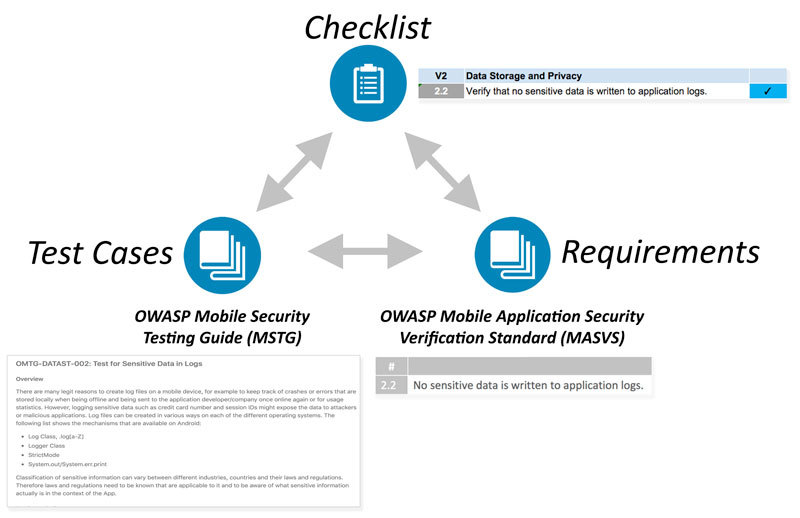
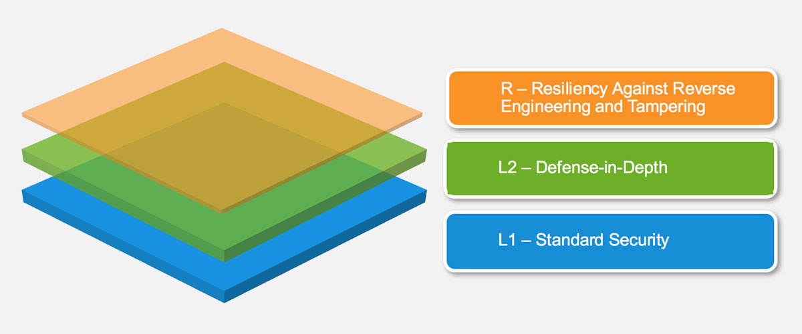
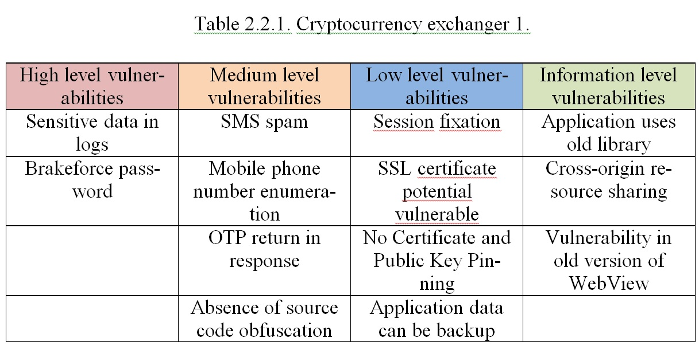
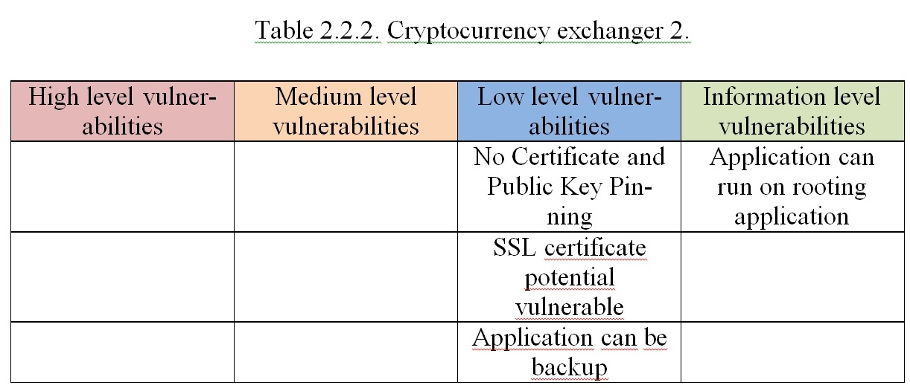
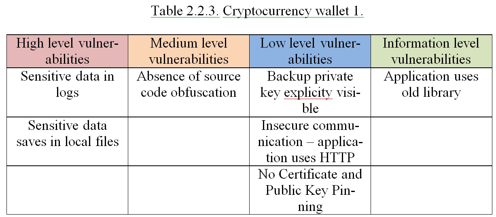
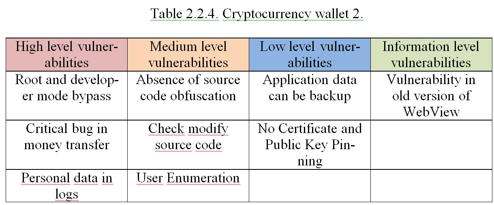
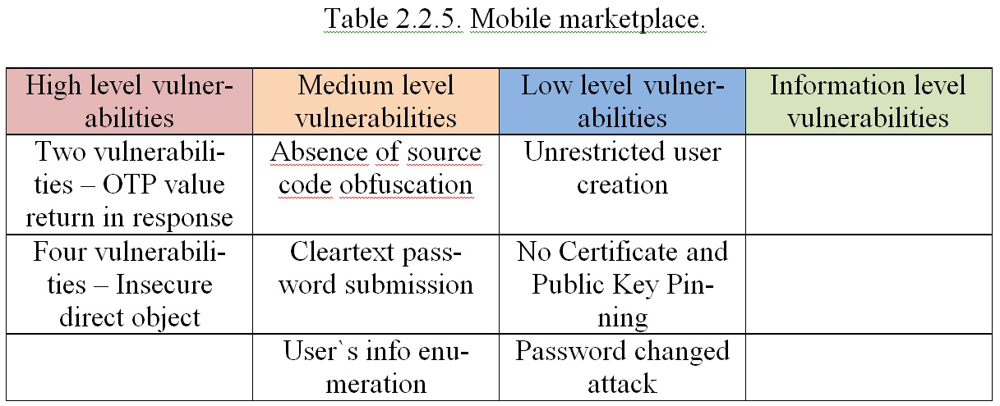

Mykhailo Antonishyn, Oleksii Misnik
Pukhov Institute for Modelling in Energy Engineering National Academy of Sciences of Ukraine, Kiev, 03164, Ukraine
ipme@ipme.kiev.ua
В статье рассматриваются международные стандарты, в которых описывается методы и способы тестирование мобильных программных приложений. Будет проведен их анализ и ключевые пункты, по которым проходит тестирование. Будет проведено сравнение и определены ключевые моменты, на которые делают акцент стандарты и методологии для тестирования на уязвимости приложения для операционной системы Android. Также будет приведена статистика по найденным уязвимостям, которые были найдены практическим путем.
mobile application, security assessment, security testing, OWASP, NIST, ISO 27034, Digital Security
According to BetaNews, among the 30 best applications with more than 500,000 downloads, 94% contain at least 3 average risk vulnerabilities, while 77% contain at minimum two high-level vulnerabilities. Among the 30 applications 17% were vulnerable to MITM attacks exposing all data to interception by malicious users. Furthermore, 44% of applications contain confidential data with strict encryption requirements, including passwords or API keys, while 66% utilize functional abilities which can compromise users’ confidentiality. This is exactly why mobile devices are subject to numerous security discussions.
ISO/IEC 27034 offers guidance on information security to those specifying, designing and programming or procuring, implementing and using application systems, in other words business and IT managers, developers and auditors, and ultimately the end-users of ICT. The aim is to ensure that computer applications deliver the desired or necessary level of security in support of the organization’s Information Security Management System, adequately addressing many ICT security risks. This multi-part standard provides guidance on specifying, designing/selecting and implementing information security controls through a set of processes integrated throughout an organization’s Systems Development Life Cycle/s (SDLC). It is pro-cess oriented.
It covers software applications developed internally, by external acquisition, outsourcing/offshoring or through hybrid approaches. It addresses all aspects from determining information security requirements, to protecting information accessed by an application as well as preventing unauthorized use and/or actions of an application. The standard is SDLC-method-agnostic: it does not mandate one or more specific development methods, approaches or stages but is written in a general manner to be applicable to them all. In this way, it complements other systems development standards and methods without conflicting with them. One of the key driving principles is that it is worth investing more heavily in specifying, designing, developing and testing software security controls or functions if they are reusable across multiple applications, systems and situations, albeit at the risk of propagating vulnerabilities more widely than might otherwise be the case. In a nutshell, “Do it properly, do it once, and reuse it”. The approach may seem a little idealistic, but some far-sighted organizations are already successfully using it: it is more than just an academic interest.
Section 8.5 “Security Audit” of this standard consists of verification and formal con-firmation of evidence that the application that is being developed is at the required level of security, which is written in the technical documentation. An application security audit can be performed at any time during the development and operation life cycle. The sixth part of the standard ISO / IEC 27034-6: 2016 Information technology - Security techniques - Application security - Part 6: Case studies does not describe how and by what means it is necessary to conduct testing. It shows just what needs to be tested. [7]
This document defines an app vetting process and provides guidance on planning and implementing an app vetting process, developing security requirements for mobile apps, identifying appropriate tools for testing mobile apps and determining if a mobile app is acceptable for deployment on an organization’s mobile devices. An overview of techniques commonly used by software assurance professionals is provided, including methods of testing for discrete software vulnerabilities and misconfigurations related to mobile app software.
Standards includes security checks according to which mobile applications are tested.
1.2.1 Incorrect Permissions. Permissions allow accessing controlled functionality such as the camera or Global Positioning System (GPS) and are requested in the pro-gram. Permissions can be implicitly granted to an app without the user’s consent.
1.2.2 Exposed Communications. Internal communications protocols are the means by which an app passes messages internally within the device, either to itself or to other apps. External communications allow information to leave the device.
1.2.3 Exposed Data Storage. Files created by apps on Android can be stored in In-ternal Storage, External Storage, or the Keystore. Files stored in External Storage may be read and modified by all other apps with the External Storage permission.
1.2.4 Potentially Dangerous Functionality. Controlled functionality that accesses system-critical resources or the user’s personal information. This functionality can be invoked through API calls or hard coded into an app.
1.2.5 App Collusion. Two or more apps passing information to each other in order to increase the capabilities of one or both apps beyond their declared scope.
1.2.6. Obfuscation. Functionality or control flows that are hidden or obscured from the user. For the purposes of this appendix, obfuscation was defined as three criteria: external library calls, reflection, and native code usage.
1.2.7. Excessive Power Consumption. Excessive functions or unintended apps run-ning on a device which intentionally or unintentionally drain the battery.
1.2.8. Traditional Software Vulnerabilities. All vulnerabilities associated with tra-ditional Java code including: Authentication and Access Control, Buffer Handling, Control Flow Management, Encryption and Randomness, Error Handling, File Han-dling, Information Leaks, Initialization and Shutdown, Injection, Malicious Logic, Number Handling, and Pointer and Reference Handling. [1-6, 9]
This document presents functional and assurance requirements found in the Protection Profile for Application Software which are appropriate for vetting mobile application software ("apps") outside formal Common Criteria (ISO/IEC 15408) evaluations. Common Criteria evaluation, facilitated in the U.S. by the National Information Assurance Partnership (NIAP), is required for IA and IA-enabled products in National Security Systems according to CNSS Policy #11. Such evaluations, including those for mobile apps, must use the complete Protection Profile. However, even apps without IA functionality may impose some security risks, and concern about these risks has motivated the vetting of such apps in government and industry.
Security Functional Requirements:
1.3.1. Random Bit Generation Services.If implement DRBG functionality is chosen, then additional FCS_RBG_EXT.2 elements shall be included in the ST. In this requirement, cryptographic operations include all cryptographic key genera-tion/derivation/agreement, IVs (for certain modes), as well as protocol-specific ran-dom values.
1.3.2. Storage of Credentials. This requirement ensures that persistent credentials (secret keys, PKI private keys, or passwords) are stored securely. The assurance activity implicitly restricts which selections can be made, on per-platform basis. For example, if a platform provides hardware-backed protection for credential storage, then the third selection cannot be indicated. If implement functionality to securely store credentials is selected, then the following components must be included in the ST: FCS_COP.1(1). If other cryptographic operations are used to implement the secure storage of credentials, the corresponding requirements must be included in the ST.
1.3.3. Access to Platform Resources. The intent is for the evaluator to ensure that the selection captures all hardware resources which the application accesses, and that these are restricted to those which are justified. On some platforms, the application must explicitly solicit permission in order to access hardware resources. Seeking such permissions, even if the application does not later make use of the hardware resource, should still be considered access. Selections should be expressed in a manner consistent with how the application expresses its access needs to the underlying platform. For example, the platform may provide location services which implies the potential use of a variety of hardware resources (e.g. satellite receivers, WiFi, cellular radio) yet location services is the proper selection. This is because use of these resources can be inferred, but also because the actual usage may vary based on the particular platform. Resources that do not need to be explicitly identified are those which are ordinarily used by any application such as central processing units, main memory, displays, input devices (e.g. keyboards, mice), and persistent storage devices provided by the platform. Sensitive information repositories are defined as those collections of sensitive data that could be expected to be shared among some applications, users, or user roles, but to which not all of these would ordinarily require access.
1.3.4. Network Communications. This requirement is intended to restrict both inbound and outbound network communications to only those required, or to network communications that are user initiated. It does not apply to network communications in which the application may generically access the filesystem which may result in the platform accessing remotely mounted drives/shares.
1.3.5. Encryption Of Sensitive Application Data.Any file that may potentially contain sensitive data (to include temporary files) shall be protected. The only exception is if the user intentionally exports the sensitive data to non-protected files.
1.3.6. Supported Configuration Mechanism. Configuration options that are stored remotely are not subject to this requirement.
1.3.7. Secure by Default Configuration. Default credentials are credentials (e.g., passwords, keys) that are automatically (without user interaction) loaded onto the platform during application installation. Credentials that are generated during installation using requirements laid out in FCS_RBG_EXT.1 are not by definition default credentials. The precise expectations for file permissions vary per platform but the general intention is that a trust boundary protects the application and its data.
1.3.8. Specification of Management Functions. This requirement stipulates that an application needs to provide the ability to enable/disable only those functions that it actually implements. the application is not responsible for controlling the behavior of the platform or other applications.
1.3.9. User Consent for Transmission of Personally Identifiable Information. This requirement applies only to PII that is specifically requested by the application; it does not apply if the user volunteers PII without prompting from the application into a general (or inappropriate) data field. A dialog box that declares intent to send PII presented to the user at the time the application is started is sufficient to meet this requirement.
1.3.10. Use of Supported Services and APIs. The definition of documented may vary depending upon whether the application is provided by a third party (who relies upon documented platform APIs) or by a platform vendor who may be able to guarantee support for platform APIs.
1.3.11. Anti-Exploitation Capabilities. Requesting a memory mapping at an explicit address subverts address space layout randomization (ASLR). Requesting a memory mapping with both write and execute permissions subverts the platform protection provided by DEP. If the application performs no just-in-time compiling, then the first selection must be chosen.
1.3.12. Integrity for Installation and Update. This requirement is about the ability to "check" for updates. The actual installation of any updates should be done by the platform. This requirement is intended to ensure that the application can check for updates provided by the vendor, as updates provided by another source may contain malicious code.
1.3.13. Use of Third-Party Libraries. The intention of this requirement is for the evaluator to discover and document whether the application is including unnecessary or unexpected third-party libraries. This includes adware libraries which could present a privacy threat, as well as ensuring documentation of such libraries in case vulnerabilities are later discovered.
1.3.14. Protection of Data in Transit. Application should transmit sensitive data only via encryption channel. [1,2]
The MASVS is a community effort to establish a framework of security requirements needed to design, develop and test secure mobile apps on iOS and Android.
MASVS contains three parts:
• The Mobile Application Security Verification Standard (MASVS): This standard document defines a mobile app security model and lists generic security requirements for mobile apps. It can be used by architects, de-velopers, testers, security professionals, and consumers to define what a secure mo-bile application is.
Check controls:
V1: Architecture, Design and Threat Modeling Requirements
V2: Data Storage and Privacy Requirements
V3: Cryptography Requirements
V4: Authentication and Session Management Requirements
V5: Network Communication Requirements
V6: Platform Interaction Requirements
V7: Code Quality and Build Setting Requirements
V8: Resilience Requirements
• The Mobile Security Testing Guide (MSTG): The MSTG is a manual for testing the security of mobile apps. It provides verification instructions for the re-quirements in the MASVS along with operating-system-specific best practic-es (currently for Android and iOS). The MSTG helps ensure completeness and con-sistency of mobile app security test. It is also useful as a standalone learning resource and reference guide for mobile application security testers.
• Mobile App Security Checklist: A checklist for tracking compliance against the MASVS during practical assessments. The list conveniently links to the MSTG test case for each requirement, making mobile penetration app testing a breeze.
The MASVS defines two security verification levels (MASVS-L1 and MASVS-L2), as well as a set of reverse engineering resiliency requirements (MASVS-R). MASVS-L1 contains generic security requirements that are recommended for all mobile apps, while MASVS-L2 should be applied to apps handling highly sensitive data. MASVS-R covers additional protective controls that can be applied if preventing client-side threats is a design goal.
Fulfilling the requirements in MASVS-L1 results in a secure app that follows security best practices and doesn't suffer from common vulnerabilities. MASVS-L2 adds additional defense-in-depth controls such as SSL pinning, resulting in an app that is resilient against more sophisticated attacks - assuming the security controls of the mobile operating system are intact, and the end user is not viewed as a potential adversary. Fulfilling all, or subsets of, the software protection requirements in MASVS-R helps impede specific client-side threats where the end user is malicious and/or the mobile OS is compromised.
1.4.1. MASVS-L1: Standard Security. A mobile app that achieves MASVS-L1 adheres to mobile application security best practices. It fulfills basic requirements in terms of code quality, handling of sensitive data, and interaction with the mobile environment. A testing process must be in place to verify the security controls. This level is appropriate for all mobile applications.
1.4.2. MASVS-L2: Defense-in-Depth. MASVS-L2 introduces advanced security controls that go beyond the standard requirements. To fulfill MASVS-L2, a threat model must exist, and security must be an integral part of the app's architecture and design. Based on the threat model, the right MASVS-L2 controls should have been selected and implemented successfully. This level is appropriate for apps that handle highly sensitive data, such as mobile banking apps.
1.4.3. MASVS-R: Resiliency Against Reverse Engineering and Tampering. The app has state-of-the-art security, and is also resilient against specific, clearly defined client-side attacks, such as tampering, modding, or reverse engineering to extract sensitive code or data. Such an app either leverages hardware security features or sufficiently strong and verifiable software protection techniques. MASVS-R is appli-cable to apps that handle highly sensitive data and may serve as a means of protecting intellectual property or tamper-proofing an app.
Notes:
I: Although OWASP recommend implementing MASVS-L1 controls in every app, implementing a control or not should ultimately be a risk-based decision, which is taken/communicated with the business owners.
II: Note that the software protection controls listed in MASVS-R and described in the OWASP Mobile Security Testing Guide can ultimately be bypassed and must never be used as a replacement for security controls. Instead, they are intended to add additional threat-specific, protective controls to apps that also fulfill the MASVS requirements in MASVS-L1 or MASVS-L2. [3-5]
Digital Security company published statics of vulnerabilities in the mobile banking applications.[8] For testing 16 banking applications were taken and used 9 checks:
1. Running application on the rooted device – 1/16.
2. Saving password after session destroy – 1/16.
3. Absent 2FA – 3/16.
4. Information about testing environment disclose – 4/16.
5. Users geolocation disclose – 4/16.
6. Possibility hijacking data via session backup – 5/16.
7. Password in memory after finish session – 5/16.
8. Absent notification if application running on rooted device – 12/16.
Us personal statistics of vulnerability assessment Android mobile application. We perform 5 tests on real mobile application and use MASVS for describe vulnerabili-ties. [3-5]
    Based on the research results, it can be concluded that the ISO / IEC 27034 standard regulates that vulnerability testing should be carried out, but it is not specified how and what should be tested for vulnerabilities. NIST and NIAP both refer to OWASP MASVS and contain controls by which the mobile application is tested, mainly focus-ing on vulnerabilities that relate to vulnerabilities in data storage and authorization. This is confirmed by statistics provided by Digital Security. The most recognized is MASVS. One of the parts of MASVS describes what and how to test.
It should be noted that all standards rather weakly assess vulnerabilities that relate to interaction with the API. As it can be seen from the tests described in Section 2.2, the most critical vulnerabilities are vulnerabilities that are associated with interaction with the application server.
1. National Information Assurance Partnership, Protection Profile for Mobile Device Fundamentals, Version 3.1, June 16, 2017. Available at https://www.niap-ccevs.org/MMO/PP/pp_md_v3.1.pdf
2. National Information Assurance Partnership,Requirements for Vetting Mo-bile Apps from the Protection Profile for Application Software , Version 1.2, April 22, 2016. Available at https://www.niap-ccevs.org/MMO/PP/394.R/pp_app_v1.2_table- reqs.htm
3. OWASP Foundation, Mobile AppSec Verification, Version 1.1.3, January 2019. Available at https://github.com/OWASP/owasp- masvs/releases/download/1.1.3/OWASP_Mobile_AppSec_Verification_Standard_1. 1.3_Document.pdf
4. OWASP Foundation, Mobile Security Testing Guide (MSTG), 1.1.0 Release, November 30, 2018. Available at https://www.owasp.org/index.php/OWASP_Mobile_Security_Testing_Guide
5. OWASP, Man-in-the-middle attack [Web site]. Available at https://www.owasp.org/index.php/Man-in-the-middle_attack
6. S. Dent, “Report finds Android malware pre-installed on hundreds of phones,” Engadget, May 24, 2018. Available at https://www.engadget.com/2018/05/24/report- finds-android-malware-pre-installed-on-hundreds-of-phones
7. ISO/IEC 27034 – Information technology – Security technique’s Application Security, first edition 2016.
8. Digital Security, Checking for information security vulnerability, august 2018. Available at https://dsec.ru/wp-content/uploads/2018/08/checklist.pdf
9. NIST 800-163 Vetting the Security of Mobile application, Available at https://doi.org/10.6028/NIST.SP.800-163r1